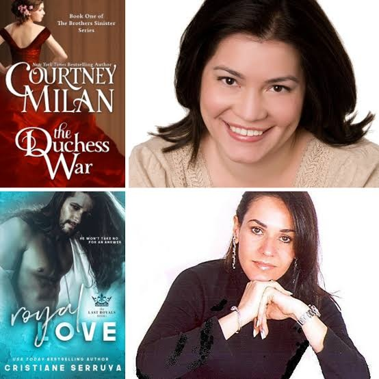
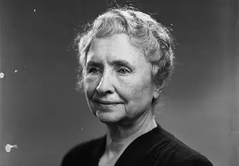
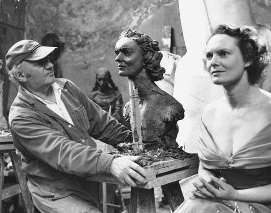

Famous Authors and Plagiarism: A Study of Consequences
Exploring the Impact of Literary Theft on Careers and Reputations
Plagiarism is the act of presenting someone else's work or ideas as your own, without proper attribution. This includes copying text, paraphrasing without citing the source, using images or data without permission, and submitting work that has been previously submitted by another student. Plagiarism is a serious academic and ethical offense with significant consequences.
Famous Plagiarism Cases In Writers
- Cristiane Serruya

When Cristiane Serruya was charged with plagiarism for her “Romantic Novelist” work, she was already a published novelist. She had copied from numerous authors, not just one, in her book.The first person to catch her plagiarism was Courtney Milan, who reacted right away and reported it on her blog. Following the publication of this article, other authors discovered that their pieces had also been included in the book and started tweeting about it. Serruya did not dispute this but instead criticized the writer who had hired her. Despite this, Serruya remained on the blacklist created by the other writers.Although she was compelled to delete her Twitter account, no action was brought because it would be expensive to sue in another nation. - Helen Keller

American author Helen Keller is blind and deaf. She learned about Margaret Canby’s story “Frost Fairies” before creating the fairy tale “The Frost King” at 11. After this story was published, its plagiarism was promptly identified, and the author was accused. Although it is unclear if it was done on purpose or by mistake, it is assumed that it occurred because the author was unaware of the adverse effects of plagiarism. - Jacob Epstein

It might be challenging to establish boundaries when it comes to literary plagiarism. However, this can also be decided using well-established academic conventions. Another author, Jacob Epstein, was accused of plagiarizing by renowned British author Marin Amis. The author’s first book, Wild Oats, which had passages lifted from Martin Amis’s “The Rachel Papers,” was determined to be plagiarism. Plagiarism was acknowledged by author Estein, who claimed it was entirely unintentional. Additionally, he underlined that he was guilty of plagiarism since he was disorganized and lost track of the quotations. Whether or not this – one of the most famous plagiarism cases – was intentionally committed, it somehow removes the authors from the situation.
Consequences Of Plagiarizing
Nature Of The Punishment In Different Countries As Per Their Ip Laws
- United States Copyright Law
In the United States, plagiarism is generally addressed through copyright law. This law gives the creators of works (works meaning literary, musical, artistic, and many other types of work)the exclusive right to reproduce, distribute, perform, display, or license their creations. However, not every use or reproduction of someone else’s work is considered a violation of copyright. The “Fair Use Doctrine” allows for limited use of the user’s copyrighted material without permission, for purposes like criticism, comment, news reporting, teaching, scholarship, or research.
The penalties for copyright infringement (which plagiarism can fall under) can be severe and far-reaching. Depending on the use and severity of the infringement, they can include large fines as well as civil and criminal penalties. - United Kingdom: Copyright, Designs and Patents Act
The U.K. addresses plagiarism under the Copyright, Designs, and Patents Act of 1988. Like the U.S. the creator has exclusive rights to their intellectual property, however, there are some exceptions. Like the U.S.’s Fair Use Doctrine, copyrighted material can be used in the U.K. for private study or research, criticism, review, and news reporting.Penalties for infringement can be swift and severe and if breaking the law, a user can face both civil and criminal penalties including fines and, if severe, imprisonment. - Australia: The Copyright Act
Australia has the Copyright Act of 1968, which offers similar protections to authors, artists, and creators. Beyond the basic protections of copyright, Australian law recognizes the moral rights of creators. This includes the right of attribution, the right against false attribution, and the right of integrity. The right of attribution means that the creator must be given proper credit for their work and have the right to be identified wherever their work is used. False attribution is like “reverse plagiarism”, it prevents creators from being wrongly attributed to something they didn’t create. For example, if someone creates a work that’s distorted and mocks the author’s original, well-known version, they are protected from being associated with it by extension as the derivative work might harm their reputation. - India: Copyright Act of 1957
India’s copyright act covers literary, artistic, dramatic, and musical works. Although the act allows for “fair dealing” for purposes like research, private study, and criticism, this doesn’t mean that users get a free pass for plagiarism. In fact, schools and universities in India have recently become very strict regarding plagiarism, with many of them usingplagiarism detection softwareto root out academically dishonest students. At the professional level, plagiarism can lead to legal action and swift job termination. - Canada: Copyright Act
Plagiarism in Canada falls under Canada’s copyright law that protects the authors of literary works which includes anything written (scripts, books, articles, etc.). Copyright in Canada lasts for the life of the author plus 50 years and as in other countries, copyright infringement can result in civil and criminal penalties. - European Union: Directive on Copyright
Although each individual country within the E.U. has its own copyright laws, the European Union as a whole has worked hard to harmonize copyright protections between countries. This includes taking great strides in recent years to adapt copyright laws to affect how content is shared online. As a result, there’s much greater emphasis on ensuring that creators are properly compensated and recognized for their work online.